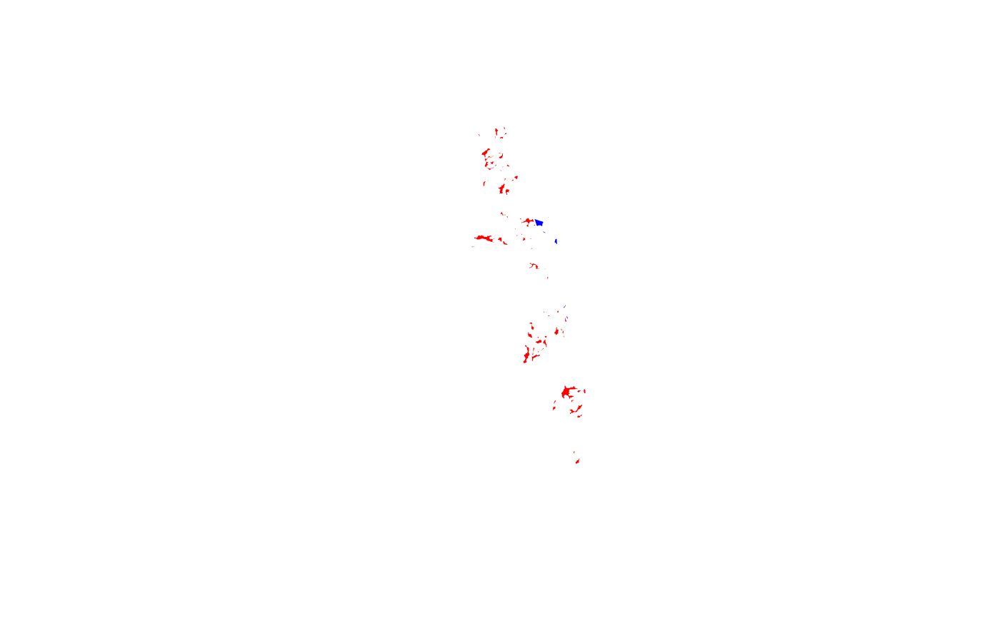

mukey, nationalmusym or areasymbolR/fetchSDA_spatial.R
fetchSDA_spatial.RdThis method facilitates queries to Soil Data Access (SDA) mapunit and survey area geometry. Queries are generated based on map unit key (mukey) and national map unit symbol (nationalmusym) for mupolygon (SSURGO) or gsmmupolygon (STATSGO) geometry OR legend key (lkey) and area symbols (areasymbol) for sapolygon (Soil Survey Area; SSA) geometry).
A Soil Data Access query returns geometry and key identifying information about the map unit or area of interest. Additional columns from the map unit or legend table can be included; see add.fields argument.
fetchSDA_spatial(
x,
by.col = "mukey",
method = "feature",
geom.src = "mupolygon",
db = "SSURGO",
add.fields = NULL,
chunk.size = 10,
verbose = TRUE
)A vector of map unit keys (mukey) or national map unit symbols (nmusym) for mupolygon geometry OR legend keys (lkey) or soil survey area symbols (areasymbol) for sapolygon geometry
Column name containing map unit identifier "mukey", "nmusym"/"nationalmusym" for geom.src mupolygon OR "areasymbol" for geom.src sapolygon; default is determined by is.numeric(x) TRUE for mukey or lkey and nationalmusym or areasymbol otherwise.
geometry result type: "feature" returns polygons, "bbox" returns the bounding box of each polygon (via STEnvelope()), and "point" returns a single point (via STPointOnSurface()) within each polygon.
Either mupolygon (map unit polygons) or sapolygon (soil survey area boundary polygons)
Default: SSURGO. When geom.src is mupolygon, use STATSGO polygon geometry instead of SSURGO by setting db = "STATSGO"
Column names from mapunit or legend table to add to result. Must specify parent table name as the prefix before column name e.g. mapunit.muname.
Number of values of x to process per query. Necessary for large results. Default: 10
Print messages?
A Spatial*DataFrame corresponding to SDA spatial data for all symbols requested. Default result contains geometry with attribute table containing unique feature ID, symbol and area symbol plus additional fields in result specified with add.fields.
This function automatically "chunks" the input vector (using makeChunks()) of map unit identifiers to minimize the likelihood of exceeding the SDA data request size. The number of chunks varies with the chunk.size setting and the length of your input vector. If you are working with many map units and/or large extents, you may need to decrease this number in order to have more chunks.
Querying regions with complex mapping may require smaller chunk.size. Numerically adjacent IDs in the input vector may share common qualities (say, all from same soil survey area or region) which could cause specific chunks to perform "poorly" (slow or error) no matter what the chunk size is. Shuffling the order of the inputs using sample() may help to eliminate problems related to this, depending on how you obtained your set of MUKEY/nationalmusym to query. One could feasibly use muacres as a heuristic to adjust for total acreage within chunks.
Note that STATSGO data are fetched where CLIPAREASYMBOL = 'US' to avoid duplicating state and national subsets of the geometry.
# \donttest{
if(requireNamespace("curl") &
curl::has_internet()) {
# get spatial data for a single mukey
single.mukey <- fetchSDA_spatial(x = "2924882")
# demonstrate fetching full extent (multi-mukey) of national musym
full.extent.nmusym <- fetchSDA_spatial(x = "2x8l5", by = "nmusym")
# compare extent of nmusym to single mukey within it
if(require(sp)) {
plot(full.extent.nmusym, col = "RED",border=0)
plot(single.mukey, add = TRUE, col = "BLUE", border=0)
}
# demo adding a field (`muname`) to attribute table of result
head(fetchSDA_spatial(x = "2x8l5", by="nmusym", add.fields="muname"))
}
#> Using 1 chunks...
#> Chunk #1 completed (n = 1; 0.1 secs)
#> Done in 0.2 secs; mean/chunk: 0.1 secs; mean/symbol: 0.15 secs.
#> Using 1 chunks...
#> Chunk #1 completed (n = 3; 9 secs)
#> Done in 9.1 secs; mean/chunk: 9 secs; mean/symbol: 3.05 secs.
#> Loading required package: sp
#> Using 1 chunks...
#> Chunk #1 completed (n = 3; 0.9 secs)
#> Done in 1.1 secs; mean/chunk: 0.9 secs; mean/symbol: 0.36 secs.

#> class : SpatialPolygonsDataFrame
#> features : 6
#> extent : -121.034, -120.9596, 38.01706, 38.24938 (xmin, xmax, ymin, ymax)
#> crs : +proj=longlat +datum=WGS84 +no_defs
#> variables : 4
#> names : mukey, areasymbol, nationalmusym, muname
#> min values : 462101, CA077, 2x8l5, Pentz-Bellota complex, 2 to 15 percent slopes
#> max values : 462101, CA077, 2x8l5, Pentz-Bellota complex, 2 to 15 percent slopes
# }